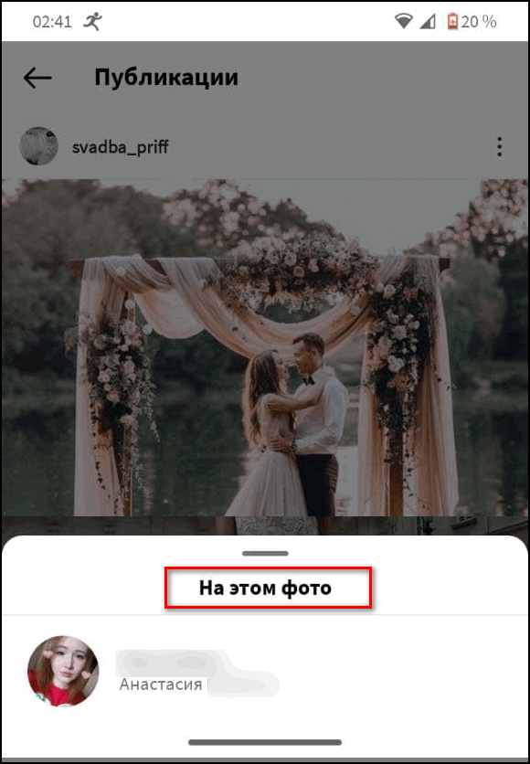
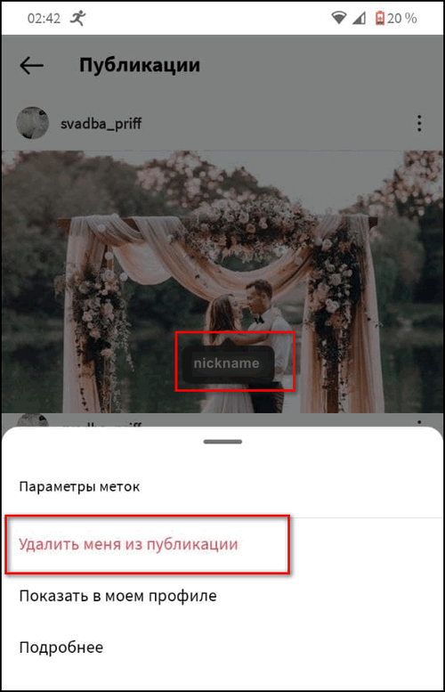
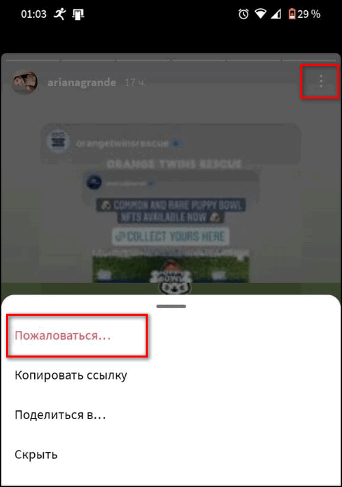
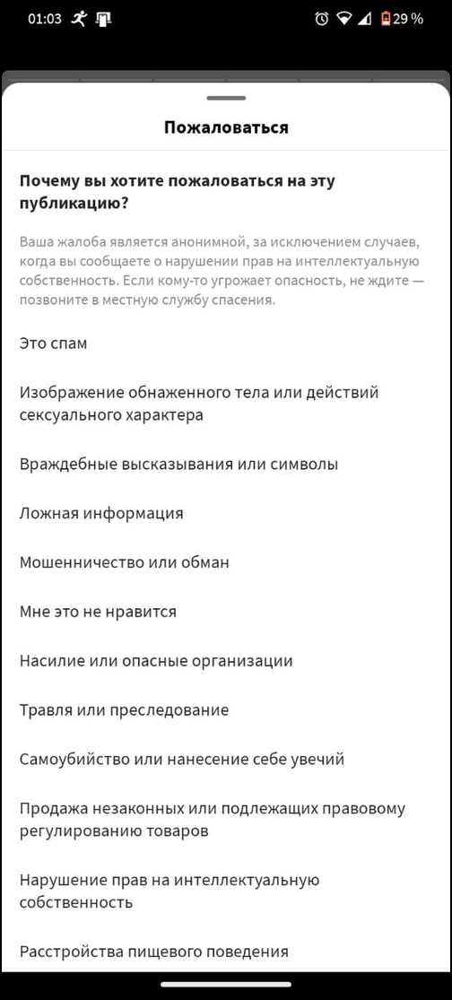
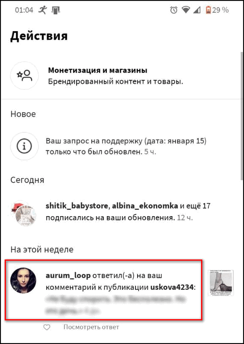
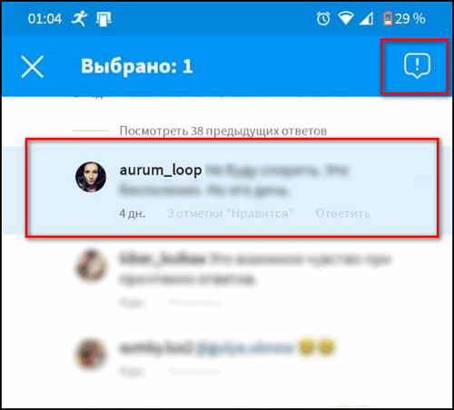
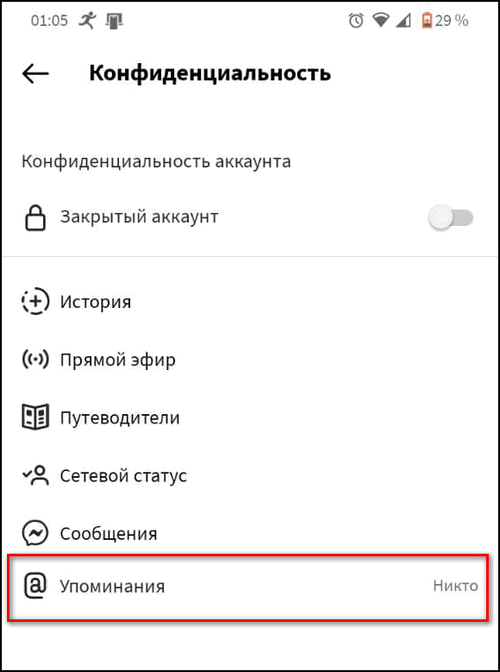
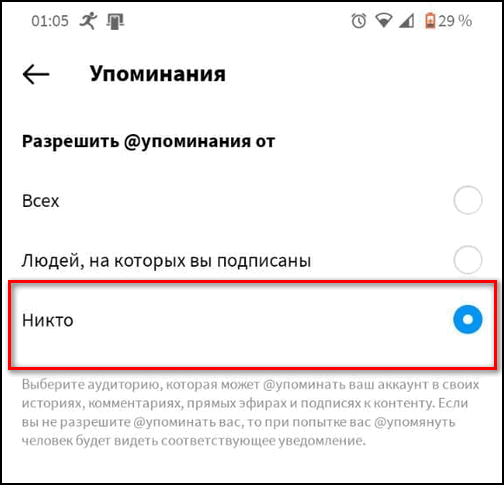
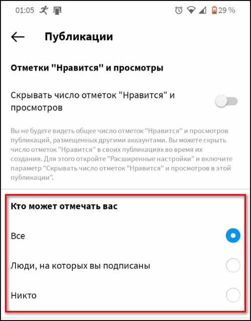

Как убрать отметку в Инстаграме: все способы удалить упоминание

Удалить отметку в Инстаграме* с фотографии возможно несколькими способами: сделать профиль закрытым, нажать по имени пользователя и удалить метку. Также упомянуть пользователя возможно через комментарии или отказаться от любых отметок в социальной сети, запретив их для своего профиля.
Как убрать отметку на фотографии в Инстаграме*
Если в настройках страницы разрешены упоминания, то подписчики и посетители страницы могут отмечать других пользователей на своих снимках, видео. Инстаграм* поддерживает несколько вариантов, как указать на страницу другого человека:
- специальная кнопка «Метка». Вписать никнейм и выбрать нужного человека из списка;
- добавить в описании, используя символ «@»;
- вписать в комментариях.
В первом случае, владелец учетной записи может отказаться от указания в публикации. В других – только попросить автора поста, чтобы он исключил из упоминаний.
Как убрать отметку в своем профиле:
- Зайти в Инстаграм* – перейти в свой аккаунт.
- Нажать по значку в виде фотографий сбоку.

- На фото выделить свой ник – зажать пальцем.

- Удалить меня из публикации – подтвердить действие.
После пропадет отметка, которая отображалась на публикации: у автора контента и у отмеченного пользователя.
Удалить упоминание в Истории
Удалить отметку на фото, которая опубликована в Сторис, невозможно. Единственное, что остается другому пользователю – отправить жалобу или написать в личные сообщения тому, кто опубликовал Историю с отметкой. Как пожаловаться на Сторис:
- Зайти в Инстаграм* – перейти на страницу к пользователю, который добавил Историю.
- Открыть Stories – нажать сверху три точки.

- Пожаловаться – указать любую причину.

Но если владелец страницы опубликовал Сторис, где упомянул другого человека и хочет удалить пост – ему придется очистить список временных записей. То есть, нужно перейти к Историям и выбрать: «Удалить». Отметка на Истории отображается, как текстовый стикер. К тому же, публикации в Сторис нельзя отредактировать.
Убрать упоминание в комментариях
Как и в остальных разделах, владелец страницы не может самостоятельно убрать отметку в комментариях. Можно лишь написать автору отзыва или же пожаловаться. Как пожаловаться на отзыв:
- Зайти в Инстаграм* – нажать по «Уведомления».
- Посмотреть, когда упоминали в последний раз.

- Перейти к оригинальной публикации – зажать по тексту.

- Нажать сверху по значку в виде восклицательного знака.
- Пожаловаться – указать причину.
Если в тексте отзыва не было слов, которые бы противоречили правилам сообществам или других нарушений, администрация не обратит на это внимание.
Удалить упоминания самостоятельно нельзя даже самому автору. Он может только стереть отзыв полностью и переписать заново. Как автору убрать упоминание:
- Перейти к публикации, где был добавлен комментарий с меткой.
- Зажать по тексту – Удалить.
Далее, нужно заново переписать текст, но впереди удалить никнейм получателя. Он получит ответ: придет соответствующее оповещение.
Удалить геометку в Инстаграме*
Если автор публикации добавил на запись геометку, он сможет её убрать через редактирование. Нужно перейти к посту и выбрать: «Изменить». Эта функция доступна только на мобильной версии: в ПК-формате нельзя редактировать записи.
- Зайти в свой профиль – нажать по публикации, где нужно убрать метку.
- Редактировать – нажать по отметке.
- Удалить текст – Сохранить.
- Редактировать профиль – Контактная информация.
- Адрес магазина – Удалить.
- Выбрать другие способы, как связаться.
Запретить другим упоминать Вас в Инстаграме*
В социальной сети есть параметры конфиденциальности, которые помогут владельцу блога ограничить доступ определенным посетителям и подписчикам. К примеру, можно запретить упоминания и указать в Сторис, комментариях уже не получится. Установить новые параметры безопасности страницы:
- Войти в свой аккаунт в Инстаграме* – Настройки.

- Конфиденциальность – Упоминания.
- Запретить всем – подтвердить.

В таком случае, никто из подписчиков или посетителей не сможет отмечать. Если они захотят сделать метку, то появится уведомление: «@никнейм запретил упоминать его». Это касается отзывов и Сторис, которые не будут опубликованы после такого оповещения.
Если владелец просто сделает профиль закрытым, то другие смогут упоминать. У них не будет доступа к просмотру публикаций, Сторис и возможности написать в Директ. Но упоминания будут доступны.
Как скрыть отметки на фотографиях
Владелец страницы может либо закрыть страницу, чтобы другие не увидели метки, либо поочередно их удалять. Еще один вариант, как отказаться от отметок: через настройки публикаций. Запретить упоминать никнейм в постах:
- Зайти в «Настройки» - Конфиденциальность.
- Публикации – Кто может отмечать.

- Никто – Подтвердить.
Этот пункт подходит пользователям, которых часто отмечают страницы мошенников или они попросту не желают, чтобы посетители профиля увидели отметки. При попытке указать, другой пользователь увидит, что аватарка выделена серым цветом.